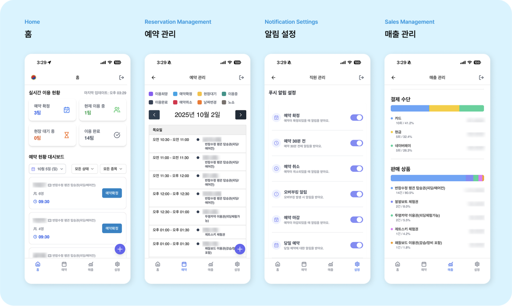
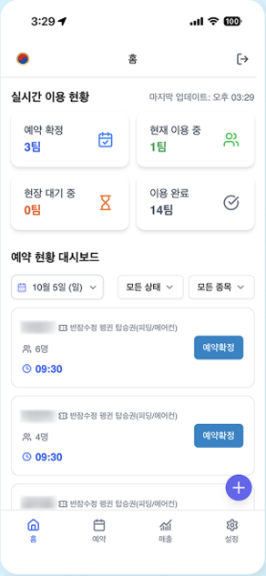
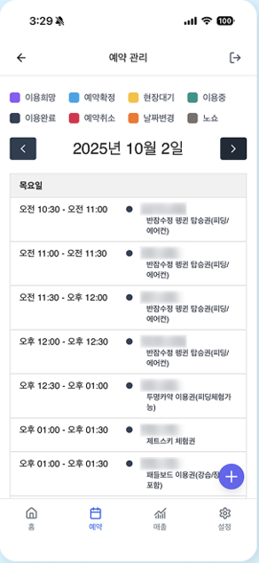
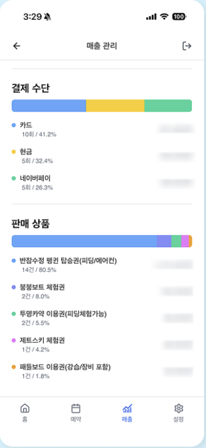
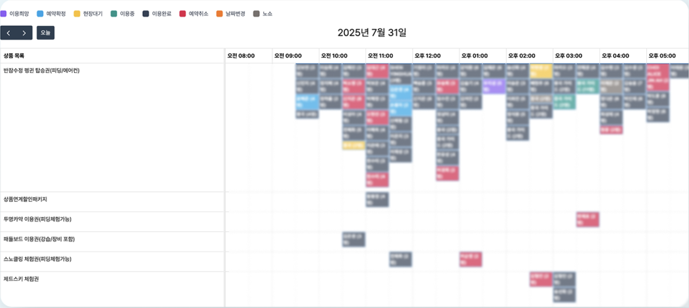

제품 화면: 현장에서 사용하는 예약·운영 UI
현장에서는 예약 목록에서 이용 상태를 확인하고, 날짜별 일정과 매출 화면으로 이동합니다. 아래는 회사가 공개한 실제 서비스 화면입니다. 이미지를 누르면 크게 볼 수 있습니다.








화면 출처: Plaid Labs 리더스클럽 공개 소개 · 고객명과 금액이 가려진 공개 이미지를 사용했습니다.
배경: 첫 고객 프로젝트, 요구사항부터 시작
국제 리더스 클럽은 현장의 예약과 운영을 다루는 서비스입니다. 플래드랩스 창업 초기 첫 고객 프로젝트에서 정해진 기획·화면 구성이 없는 상태부터 요구사항 정리, 화면 구성, UI 개발과 API 연동을 맡았습니다.
네이버 예약은 외부 서비스에서 처리하고 현장 방문 고객은 별도로 관리하던 환경이었습니다. 고객이 필요로 한 것은 예약 입력 화면 하나보다, 두 경로의 고객과 처리 상태를 함께 확인하는 흐름이었습니다.
문제: 예약 경로와 현장 상태가 나뉘어 있었다
| 대상 | 기존 업무 | 한곳에서 할 일 |
|---|---|---|
| 네이버 예약 | 외부 예약 경로를 따로 확인 | 수집된 예약을 현장 예약과 함께 표시 |
| 현장 방문 고객 | 현장 접수를 별도로 관리 | 같은 예약 흐름에서 생성·상태 확인 |
| 예약 처리 상태 | 서로 다른 경로의 정보를 확인 | 확정·대기·이용 중·완료 상태 조회 |
| 직원 간 확인 | 예약·진행 정보 공유 필요 | 같은 대시보드의 상태를 기준으로 확인 |
그래서 두 경로의 예약을 모으는 데서 끝내지 않고, 현장에서 누가 언제 어떤 상품을 이용하는지와 현재 처리 상태까지 함께 볼 수 있어야 했습니다.
첫 범위: 한 화면에서 운영할 수 있는 버전
처음 약 2주 동안은 네이버 예약과 현장 접수를 함께 볼 수 있는 대시보드와 예약 화면에 집중했습니다. 요구사항과 화면 구성을 정하고, 팀이 연결한 예약 데이터를 UI에서 사용할 수 있도록 API를 연동했습니다.
예약 시간·상품 변경과 매출 조회, 현장 상태 변경은 첫 버전을 사용한 뒤 운영 흐름에 맞춰 보완했습니다.
- 두 예약 경로네이버 예약 / 현장 접수
- 공통 예약 데이터팀의 수집·백엔드 연동
- 대시보드·타임라인예약·상품·처리 상태 표시
- 현장 조작상태·시간·상품 변경
현장 방문: 반복 조작을 목록에서 처리하도록
팀과 현장을 방문했을 때, 운영자가 예약 상태를 바꾸려고 매번 상세 화면에 들어가는 흐름을 확인했습니다. 목록의 예약 카드를 오른쪽으로 밀어 상태 변경을 시작하고, 확인 창에서 한 번 더 확인하도록 바꿨습니다. 상세 화면을 오가는 조작은 줄이면서 잘못된 변경은 막기 위한 선택이었습니다.
- 예약 확정방문 전 예약
- 현장 대기현장 도착·대기
- 이용 중서비스 이용
- 이용 완료처리 종료
운영 기준 보완: 생성일보다 실제 이용일


화면 출처: Plaid Labs 리더스클럽 공개 소개 · 고객명과 금액이 가려진 공개 이미지를 사용했습니다.
매출 달력에서는 예약이 생성된 날짜와 실제 이용한 날짜가 다른 경우를 구분했습니다. 집계 기준을 예약 생성일에서 실제 이용일로 수정했고, 예약 시간·상품을 변경하는 운영 기능도 구현했습니다.
현장에서 반잠수정의 정원과 배정 현황도 바로 확인할 수 있어야 했습니다. 배정을 변경하는 UI와 카드 색상 표시를 더해, 예약 목록만으로는 보이지 않던 운영 정보를 화면에 담았습니다.
| 현장 작업 | 바꾼 점 | 사용 방식 |
|---|---|---|
| 예약 상태 변경 | 목록의 카드 슬라이드 + 확인 | 상세 화면 진입 없이 처리 |
| 예약 변경 | 시간·상품 변경 API 연결 | 현장에서 예약 정보 수정 |
| 매출 확인 | 실제 이용일 기준 집계 | 예약 생성일과 구분 |
| 배정 확인 | 정원·배정 변경 UI와 색상 표시 | 배정 현황을 화면에서 확인 |
결과: 현장 운영 인력 40% 감소
약 2주 만에 네이버 예약과 현장 접수를 함께 볼 수 있는 첫 버전을 만들었습니다. 이후 현장에서 반복되는 상태 변경을 확인해 카드 슬라이드와 확인 단계를 추가하고, 예약 변경과 실제 이용일 기준 매출 조회까지 운영 기능을 넓혔습니다.
예약·현장 운영을 한곳에서 처리하게 된 뒤 현장 운영 인력이 기존 5명에서 3명으로 줄었고, 운영비도 감소했습니다. 현장 직원과 대표는 예약 관리에 쓰는 시간이 절반 정도 줄었다고 이야기했습니다.
돌아보며: 첫 화면보다 실제 조작이 중요했다
예약을 한곳에 모은 뒤에도 현장에서는 상태를 바꾸려고 상세 화면을 오가야 했습니다. 직접 사용 흐름을 확인하면서 상태 변경을 목록으로 옮기고, 시간·상품 변경과 배정 현황도 화면에서 처리할 수 있게 보완했습니다.
이 프로젝트에서 배운 것은 기능을 한곳에 모으는 일과 현장에서 쓰기 편하게 만드는 일은 다르다는 점입니다. 운영자가 무엇을 확인하고 어디에서 손이 멈추는지 보는 일이 이후의 개선 방향을 정했습니다.